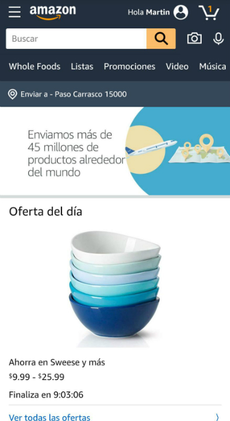

PARC: Contrasts
The Church of Jesus Christ
The Church of Jesus Christ Official WebsiteWhen you open this website, you have a clear block of white at the top the doesn't feel "stuffed". You have easy access to the menu with a clear color. However, contrast is used in a really nice manner to highlight the content that Church is expecting you to see and enjoy. Colorful pictures with contrasting fonts are used for this purpose.
PARC: Alignment
Amazon
Amazon.com Amazon has a lot of options it offers without the need to scroll: A menu, user account access, shopping cart, search bar, tabs with offers, address, and then comes offers of the day. The reason why I think alignment is so good here is that in spite of all these items, they are perfectly organized so that the website looks tidy, organized and user friendly.
White Space and Clean Design
Pati Matos
Pati Matos FotografiaI scrolled down just a bit before taking the screenshot to show why I say this website has excellent use of white spaces and clean design. In the middle, you can see her work in pictures, on top of it, the header is really smooth with a lot of white space and easy access to any information you want. Then, she uses white space below the picture too in order to show a quote and the white space gives a professional look to it.